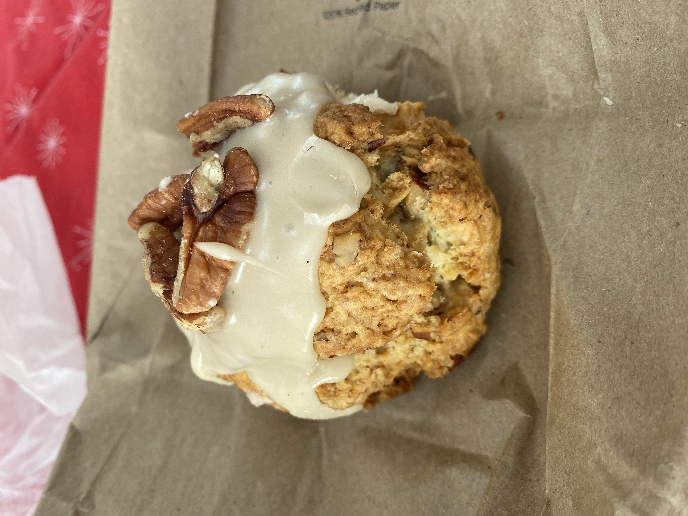

New York Coffee Shop

Rhode Island Coffee Shop
 Tea Time!
Tea Time!
Blue State Coffee's mission is to create a ripple effect of positive change.
As a family owned business that was founded on ideals, not just for profit, we care deeply about the people around us and strive to make a meaningful difference in their lives. Since our founding in 2004, we have donated over $1,000,000 to local non-profit organizations.
For our customers, we roast our own fairly-traded and ethically-sourced coffee, serve delicious fresh food, and provide a welcoming environment for visiting, working, meeting, and relaxing.
For our communities, we support local non-profit organizations by raising awareness, sponsoring events, contributing coffee, and donating funds.
We believe it is important for our cafes to reflect and improve the communities they serve.
For our baristas, we pay a fair wage, provide excellent training, and promote from within whenever possible.
For our coffee farmers, we source every bean ethically and build relationships across the supply chain,
starting with the farmers at origin.
For our planet, we minimize our environmental impact through sustainable practices.